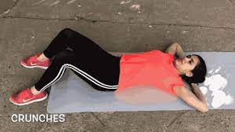
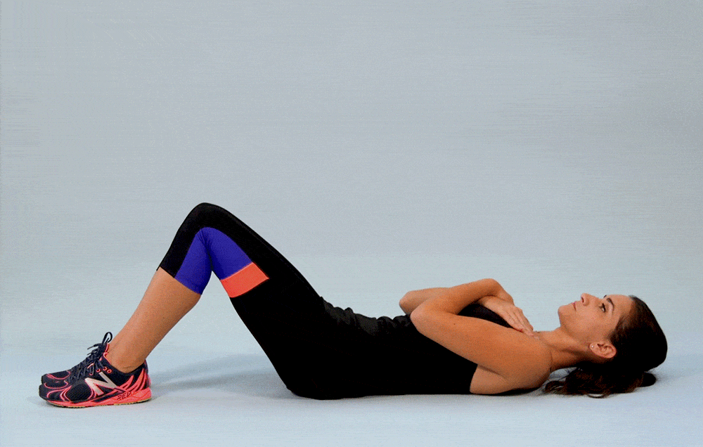

Crunch
1.Lay down on the floor
2.Facing the sky and hold your hands at the back of your head, elbows bent.
3. Slowly crunch your torso forward, bringing your elbows towards your knees, and exhale. Pause at the bottom, then return to starting position and repeat for desired reps.

Situp
1. Lie down
2.Sit up without moving legs and back straight
3. Sit down and repeat
